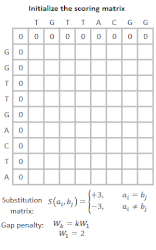

Wilfredo Abudeye - Electrical Engineering Projects
Α. Manufacturing Inspection Fixture
I designed and created a device that allowed the automation of the quality control process for a
monitor manufacturer located in Tulsa, Oklahoma. This capstone project integrated design process,
electromecanical procedures, budgeting and time management. It was created in a span of a year
by a team of 4 engineers. We were in charge of designing, purchasing, implementing, testing,
and documenting.
In specific, the inspection device was made to standardize inspection times and angles. Originally,
workers inspected each monitor by hand for an approximate of 30 seconds. During those 30 seconds,
they had the task of deciding which monitors had defects (dead pixels, scratchs). However, the
company was still shipping monitors with defects. Consequently, our inspection fixture held each screen
and rotated it in specific angles for an alloted period of time. This standarization will help decrease
human error by showing the user all the possible angles with enough time to observe all possible defects.


Β. DNA Search Algorithm
I developed an algorithm for a simple local DNA alignment search, designed an integrated
circuit, and printed the corresponding microchip. The search algorithm was coded using C# program
(visual studio) to perform local DNA sequence alignment operations using Smith-Walters sequencing.
Furthermore, VLSI‑Electric was used to design and print the mentioned integrated circuit.
In specific, the Smith–Waterman algorithm performs local sequence alignment; that is, for
determining similar regions between two strings of nucleic acid sequences or protein sequences.
Instead of looking at the entire sequence, the Smith‑Waterman algorithm compares segments of
all possible lengths and optimizes the similarity measure.


Γ. Bluetooth Low Energy Systems
Collaborated with a team of engineering, business, and marketing students, to develop a
marketable, functioning product. Used Arduino and Texas Instruments products to apply a low consumption
communication system between a door and a beacon key to automate the entry process.
The main challenge with this project was finding middle ground between the goals of business
and marketing goals. Communication skills were essential for harmony, and flexibility was crucial
for success. Everybody ended up sacrificing something, but the main goal was always in mind.
p { color: red; }
body { background-color: #eee; }
Δ. Solar Farm Design
Utilized System Advisory Model (SAM) to collect information, select parts, and design a solar farm as
part of a renewable energy case study. This study was presented in the Arkansas Capitol Stem Fair.